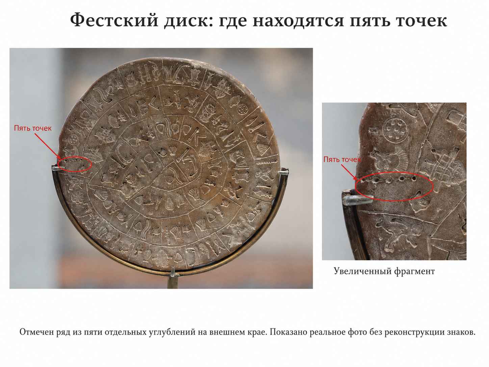
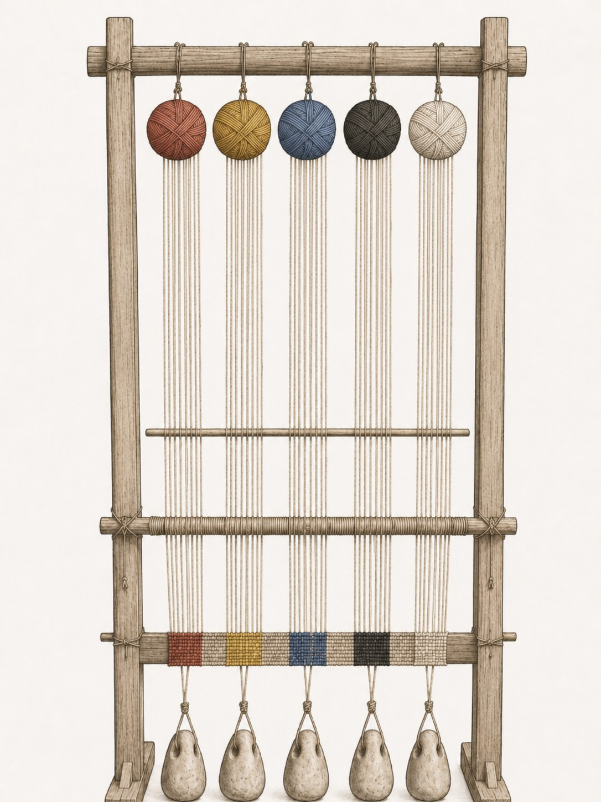

1. Постановка проблемы
Фестский диск представляет редкий случай, когда исследователь располагает неизвестным текстом, выполненным практически уникальной системой письма. Отсутствие достаточного корпуса параллельных документов делает полноценную дешифровку его знаков чрезвычайно проблематичной. Поэтому особую ценность имеют элементы, значение которых потенциально определяется не фонетикой неизвестного языка, а положением относительно текста.
К таким элементам относятся пять точек у внешнего начала обеих сторон диска. Giorgia Baldacci в современном археологическом обзоре отдельно фиксирует «five dots at the beginning of both faces» [2]. Археологический музей Ираклиона характеризует вертикальную линию с пятью точками на внешнем краю каждой стороны как маркер начала и направления чтения от края к центру [1].
Здесь необходимо различать два вопроса. Первый относится к функции: связаны ли пять точек с началом текста? Их положение и схождение современных интерпретаций делают такой вывод сильной рабочей предпосылкой. Второй вопрос относится к происхождению формы: почему знак начала состоит именно из пяти одинаковых элементов? Именно этот второй вопрос остаётся открытым и составляет предмет настоящей работы.

2. Метод: сначала независимая модель, затем Фестский диск
При работе с недешифрованной письменностью особенно опасен обратный метод: исследователь замечает необычный знак, приписывает ему значение, а затем собирает культурные параллели, подтверждающие уже выбранное объяснение. В настоящей работе используется противоположный порядок.
Исходный вопрос формулируется независимо от Фестского диска: существовала ли в древности модель, согласно которой создание словесного произведения понималось как связывание или ткачество, а его начало - как структурный аналог начала ткацкого процесса?
Только после рассмотрения этого независимого историко-филологического материала полученная модель сопоставляется с пятью точками. Такой порядок не доказывает предлагаемую интерпретацию, но исключает замкнутую аргументацию: текстильная модель должна существовать безотносительно к объекту, который ею предлагается объяснить.
3. Анатолия II тысячелетия до н. э.: «связывать» и «песня»
Особое значение имеет хеттский материал, поскольку он переносит обсуждение из классической античности непосредственно в бронзовый век. Marianna Pozza в работе «Traces of “Weaving” in Hittite: A Brief Overview» рассматривает хеттские рефлексы индоевропейских корней, семантически связанных с ткачеством, прядением, шитьём и связыванием [3].
На с. 229 Pozza приводит хеттский глагол išḫai-, išḫiya- «связывать, обвязывать; обязывать» и существительное išḫamāi- «песня, мелодия», характеризуя последнее как буквально «bound speech» - «связанная речь». Далее она относит этот случай к более широкой индоевропейской метафоре, в которой прядение, шитьё и ткачество используются для описания соединения слов [3, p. 229].
Здесь необходима принципиальная оговорка. Перед нами этимологическая интерпретация, поддержанная сравнительным анализом, а не сохранившаяся хеттская фраза вроде «я тку песню». Поэтому некорректно утверждать, что хеттские тексты непосредственно засвидетельствовали формулу «ткать песнь». Однако и преуменьшать материал не следует: в языке II тысячелетия до н. э. обозначение песни профессионально сопоставляется с глаголом «связывать», а Lazzeroni, на которого ссылается Pozza, рассматривал греко-хеттскую изоглоссу как отражение представления о поэзии как связи составляющих песню частей [3].
Это ещё не модель «начало ткани = начало текста», но уже ранняя ступень, необходимая для понимания дальнейшего развития текстильной семантики словесного произведения.
4. Архаическая греческая традиция: начальная кромка и prooimion
Следующий этап значительно лучше виден в архаической греческой поэтике. Giovanni Fanfani и Ellen Harlizius-Klück в рецензированной главе «(B)orders in Ancient Weaving and Archaic Greek Poetry» исследовали не вообще литературный образ ткани, а конкретную технологическую особенность работы на вертикальном станке с грузиками - ordering band, формирующую starting border ткани [4].
Начальная полоса предшествует основной ткани и организует нити основы, на которых затем строится полотно. Авторы сопоставляют эту конструктивную функцию с prooimion как композиционным и перформативным принципом orderly beginning - упорядоченного начала - в образцах архаической греческой поэзии [4].
Существенно, что это сопоставление относится к архаической греческой традиции и не должно автоматически переноситься в Эгеиду II тысячелетия до н. э. Тем не менее оно показывает дальнейшее развитие модели, ранняя лексическая ступень которой засвидетельствована в Анатолии бронзового века.
5. Prooimion и пределы этимологического аргумента
Gregory Nagy предлагает более конкретную текстильную интерпретацию самого слова prooimion, связывая его с образом «initial threading» и сопоставляя с технологией starting border [5]. Эта гипотеза особенно интересна для настоящей темы, но её нельзя превращать в опорное доказательство.
Этимология prooimion дискуссионна, и для oimos/oimē существуют альтернативные объяснения, в том числе через значения «путь» и «последовательность». Поэтому для дальнейшей аргументации достаточно более ограниченного тезиса: независимо от этимологии самого слова Fanfani и Harlizius-Klück показали функциональное и концептуальное соответствие между начальной кромкой ткани и принципом упорядоченного начала архаической греческой композиции [4].
6. Латынь: лексикализованный переход от ткани к началу речи
В латинском языке перенос становится особенно прозрачным. Lewis & Short определяет ordior прежде всего как «to begin a web, to lay the warp» - «начать ткань, заложить основу», после чего фиксирует общее значение «начинать, приступать». Там же приводится пример Плиния araneus orditur telas - «паук начинает ткать сеть» [6].
Слово exordium демонстрирует тот же переход ещё нагляднее: Lewis & Short фиксирует его исходное значение как «the beginning, the warp of a web», а далее - «начало» вообще и специальное риторическое значение «вступление, начало речи» [6].
Латинский материал значительно моложе Фестского диска и сам по себе ничего о нём не доказывает. Его значение состоит в другом: он демонстрирует полностью лексикализованную форму семантического перехода, более ранние ступени которого обнаруживаются в анатолийском и греческом материале.
7. Историческая модель и пределы реконструкции
Из этого не следует, что доказана непрерывная историческая передача одной конкретной метафоры от хеттов к грекам и далее к римлянам. Для такого вывода потребовалось бы отдельное исследование. Более ограниченный вывод значительно надёжнее: текстильная модель создания и начала словесного произведения имеет глубокую древность и не сводится к поздней риторической фигуре классической эпохи.
8. Фестский диск и археологический контекст Room 101
Фестский диск был найден в 1908 году в северо-восточном комплексе Феста, в помещении, обозначаемом в современной нумерации как Room 101. В новейшем обзоре Baldacci показывает, что основная масса керамики разрушенного горизонта относится к зрелому Middle Minoan IIIA, а новые исследования интерпретируют Room 101 как помещение производственного назначения, использовавшееся для обработки жидкостей, - деятельность, «probably connected to textile production» [2, pp. 155-170].
Последнее обстоятельство заслуживает внимания, но не может выступать доказательством текстильной интерпретации пяти точек. Во-первых, функциональная характеристика помещения сама является археологической реконструкцией. Во-вторых, слой находки был нарушен в эллинистическое время [2]. Тем не менее это независимое контекстуальное совпадение делает дальнейшее исследование текстильной функции помещения особенно оправданным.
В том же помещении находилась табличка Linear A PH 1, найденная Pernier в нескольких сантиметрах от диска; позднейшие работы выявили также фрагмент PH 54, который, согласно реконструкции контекста, мог относиться к первоначальному депозиту Room 101 [2]. Эти данные укрепляют местный письменный контекст находки, но не устанавливают язык самого диска.
9. Фест как место находки и проблема происхождения
Современная работа Baldacci серьёзно укрепляет аргументы в пользу аутентичности диска и его хорошей вписанности в материальную и технологическую культуру Феста на переходе от протопалациального к неопалациальному периоду. Автор прямо квалифицирует предмет как authentic Minoan object на основании археологической контекстуализации [2].
Одновременно Baldacci подчёркивает отсутствие естественно-научного анализа самого артефакта, включая термолюминесцентное исследование, который мог бы дать окончательные ответы [2]. Поэтому необходимо различать четыре уровня утверждения:
- Диск найден в Фесте - археологический факт.
- Диск хорошо вписывается в минойский культурный и технологический контекст Феста - сильный вывод современной археологической аргументации.
- Физическое место изготовления предмета не устанавливается автоматически из места находки.
- Происхождение уникальной системы письма и язык надписи остаются нерешёнными вопросами.
10. Основная гипотеза: пять точек как состояние материала до начала ткачества
Перед началом ткацкой работы материал существует в состоянии, принципиально отличном от готовой ткани. Имеются раздельные запасы пряжи. В зависимости от технологии это могут быть мотки, клубки, пучки, намотки или иным образом организованные количества нитей. Общий принцип остаётся одним: до начала тканья элементы раздельны, после начала они включаются в единую структуру.
- • • • •
На Фестском диске пять точек расположены не как обычные штампованные компоненты внутри последовательности, а у начала обеих сторон [1; 2]. Это позволяет сформулировать рабочую гипотезу:
Пять точек у начала обеих сторон Фестского диска могли восходить к условному изображению нескольких раздельных исходных единиц пряжи до начала их соединения в ткань. В культурной модели, где создание словесного произведения осмыслялось через связывание или ткачество, такой образ мог приобрести паратекстовую функцию знака начала композиции.
Формулировка сознательно не отождествляет точки с «пятью клубками» как конкретным предметным изображением. Пиктографический или технологический источник знака способен схематизироваться и сохранять функцию после того, как первоначальный предметный образ перестаёт быть очевидным.
11. Что объясняет гипотеза
Однако остаётся наиболее очевидный вопрос: почему элементов именно пять?
12. Почему именно пять?
Нам неизвестно свидетельство существования универсального правила, согласно которому ткачество бронзового века должно было начинаться ровно с пяти мотков, пучков или иных запасов пряжи. Вводить такую норму ad hoc исключительно ради объяснения диска было бы методологически недопустимо.
Можно, однако, сформулировать более узкую вспомогательную гипотезу. Раздельные запасы пряжи могут различаться прежде всего цветом. Если пятикомпонентный маркер сохраняет память не просто о количестве нитей, а о наборе исходных цветовых ресурсов, число пять перестаёт быть полностью произвольным. Такая возможность требует независимой проверки и имеет более низкий доказательный статус, чем основная текстильная гипотеза.
13. Пять цветовых категорий как вспомогательная гипотеза второго уровня
Аналитическое исследование пигментов настенной живописи Кносса, проведённое S. Profi, L. Weier и S. E. Filippakis, охватывает материалы приблизительно 1700-1400 гг. до н. э. и фиксирует, среди прочего, белый, чёрный, синий, красный и жёлтый пигменты [7].
Эти данные нельзя превращать в тезис о «пяти основных цветах» минойцев. Исследование не утверждает существования пятеричного цветового канона, а в росписях присутствуют также производные и смешанные оттенки. Тем более фресковые пигменты не тождественны красителям шерсти или льна: речь идёт о разных технологических системах.
Тем не менее совпадение имеет значение как кандидат на объяснение пятеричности, если основная текстильная гипотеза будет подтверждаться независимо. В таком случае красный, жёлтый, синий, чёрный и белый могут рассматриваться не как доказанный «канон пяти», а как реально засвидетельствованный набор хорошо различимых цветовых категорий в критской материальной культуре эпохи, близкой к датировке диска [7].
Основная гипотеза отвечает на вопрос, почему у начала текста могут находиться несколько раздельных элементов. Цветовая гипотеза второго уровня пытается объяснить, почему таких элементов могло оказаться именно пять.

14. Географическое ограничение цветовой гипотезы
Вспомогательная цветовая гипотеза зависит от происхождения знаковой традиции диска. Если система окажется преимущественно местной критской, критский материал приобретёт больший вес. Если её источник будет убедительно связан с другим регионом, минойская цветовая параллель потеряет значительную часть объяснительной ценности. Именно поэтому данная гипотеза обладает проверяемой уязвимостью и не включается в основной доказательный ряд.
15. Альтернативные объяснения
Предлагаемая интерпретация не отменяет более простых возможностей. Пять точек могли быть условным пунктуационным или паратекстовым знаком, числом, ритуальным или счётным обозначением либо графическим элементом, предметное происхождение которого не связано с ткачеством. Однако для таких объяснений по-прежнему остаётся вопрос о происхождении именно пятикомпонентной формы.
Текстильная гипотеза отличается тем, что пытается одним механизмом связать положение комплекса у начала, множественность и однородность элементов и древнюю культурную модель, в которой словесное произведение осмысляется через операции связывания и ткачества. Это не делает гипотезу истинной автоматически, но делает её научно проверяемой.
16. Проверяемые следствия
Гипотеза будет научно содержательной только при наличии наблюдений, способных её усилить или ослабить. Поэтому дальнейшая проверка должна идти по нескольким независимым направлениям.
- Текстильная иконография бронзового века: поиск изображений подготовки станка в Эгеиде, Анатолии и Восточном Средиземноморье, особенно сцен, где до начала тканья показаны несколько раздельных запасов пряжи.
- Техническая лексика: поиск слов и выражений, в которых подготовка основы, начальная кромка, раскладка нитей или начало тканья переходят в значения «начать», «составить», «рассказать», «спеть», «написать» или «создать порядок».
- Паратекстовая графика: поиск нескольких одинаковых элементов перед началом текстовых или знаковых последовательностей в других письменных системах соответствующего ареала.
- Число пять: проверка существования во II тысячелетии до н. э. текстильных систем, где исходная пряжа организовывалась в устойчивые пятеричные наборы - технологические, цветовые, ритуальные или учётные.
Особенно сильным подтверждением стало бы независимое обнаружение промежуточного звена между раздельными запасами пряжи и схематическим многоточечным знаком начала. Напротив, устойчивое доказательство иной функции пяти точек или иной происхождения их формы ослабило бы либо опровергло предложенную модель.
17. Границы гипотезы
- Не доказано, что пять точек изображают пряжу.
- Не найдено промежуточной иконографической формы, позволяющей проследить превращение изображения запасов нити непосредственно в ряд точек.
- Не установлено, почему элементов именно пять.
- Не доказано существование на Крите системы пяти основных текстильных цветов.
- Не установлены язык Фестского диска и точное происхождение его уникальной системы письма.
- Не найдено бронзововековой формулы, в которой «начать ткать» непосредственно означало бы «начать текст» так же прозрачно, как это позднее происходит в латинском ordior/exordium.
18. Заключение
Пять точек Фестского диска представляют необычную проблему именно потому, что их положение понятнее их формы. Они находятся у начала обеих сторон, а комплекс из радиальной линии и пяти точек современная музейная интерпретация связывает с началом и направлением чтения [1]. Однако число и морфология элементов этой функцией не объясняются.
Независимое рассмотрение древней языковой и технологической традиции показывает, что словесное произведение действительно могло концептуализироваться через операции связывания и ткачества. В хеттском языке II тысячелетия до н. э. išḫamāi- «песня, мелодия» профессионально сопоставляется с išḫai-/išḫiya- «связывать» и определяется как «bound speech» [3, p. 229]. В архаической греческой поэтике конструктивная функция starting border сопоставляется с prooimion как принципом упорядоченного начала [4]. В латинском ordior сохраняет исходное «начать ткань, заложить основу», а exordium обозначает и начало ткани, и начало речи [6].
На этом фоне пятикомпонентный маркер Фестского диска допускает новое объяснение: он мог обозначать не число внутри текста, а состояние материала перед созданием структуры - несколько раздельных исходных единиц, которые после начала работы соединяются в единое полотно. При переносе текстильной модели на словесную композицию такой образ мог получить функцию знака начала.
Почему элементов пять, остаётся отдельной проблемой. Связь с пятью хорошо засвидетельствованными цветными категориями критской живописи - красным, жёлтым, синим, чёрным и белым - рассматривается здесь только как вспомогательная гипотеза второго уровня, а не как доказательство [7].
Особое значение имеет независимое обстоятельство: новые исследования Room 101, где был найден диск, предполагают производственную деятельность, вероятно связанную с текстилем [2]. Это совпадение не доказывает предложенной интерпретации, но делает дальнейшее исследование текстильного контекста находки особенно оправданным.
В предлагаемой модели пять точек не обязаны ничего сообщать внутри текста. Их возможная функция относится к самому акту его развёртывания: здесь начинается плетение произведения.
Таким образом, вопрос о пяти точках переводится из области свободной дешифровки в область проверяемой междисциплинарной гипотезы, допускающей проверку средствами археологии, истории текстиля, сравнительной филологии и семиотики письма.